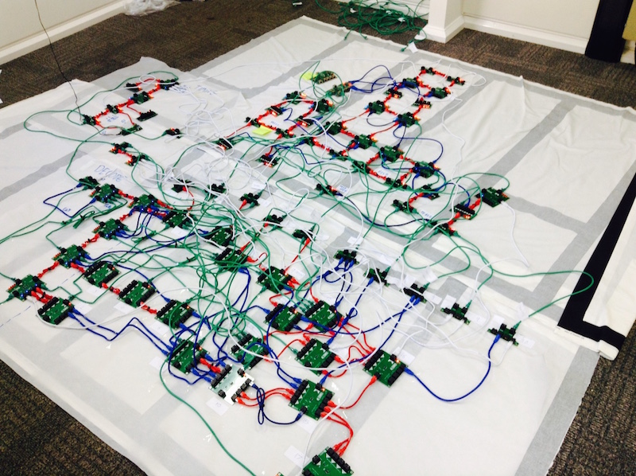
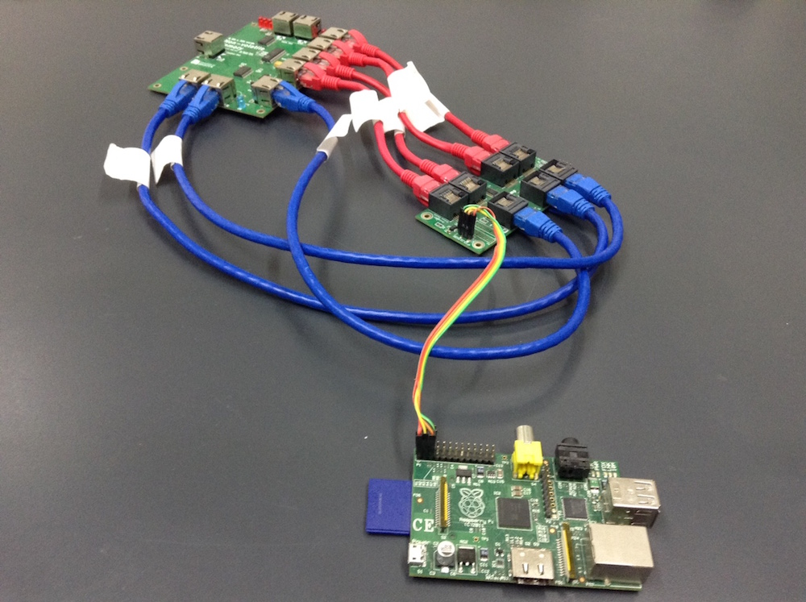
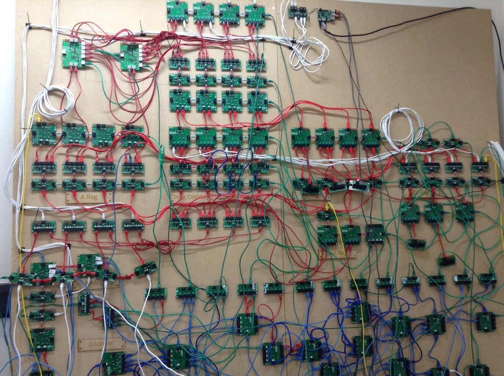
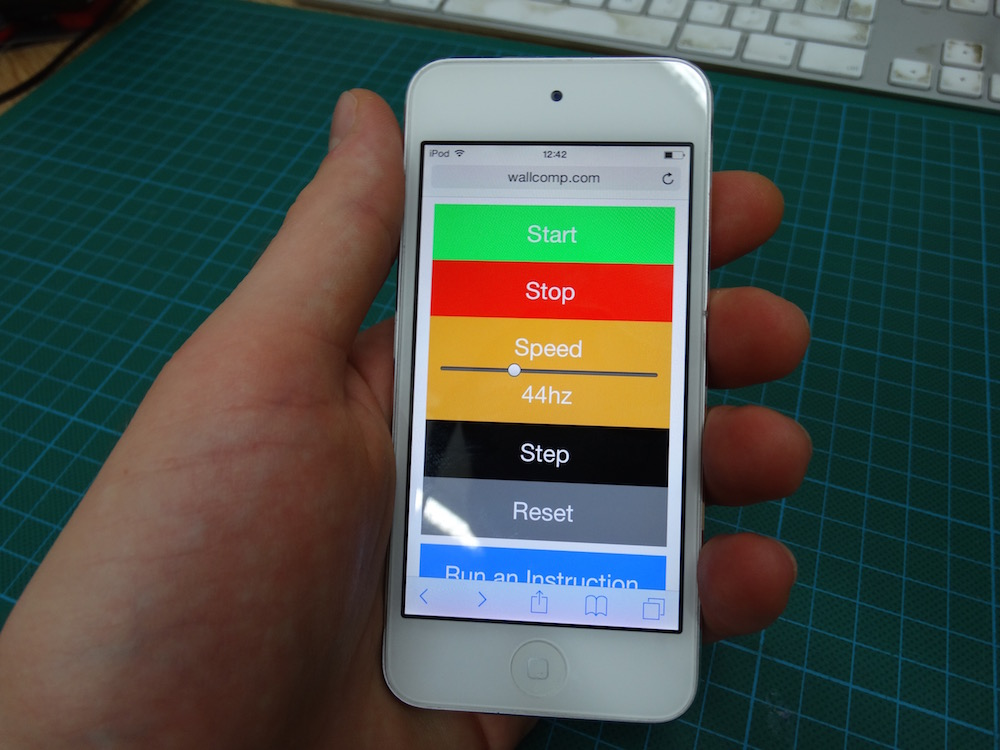
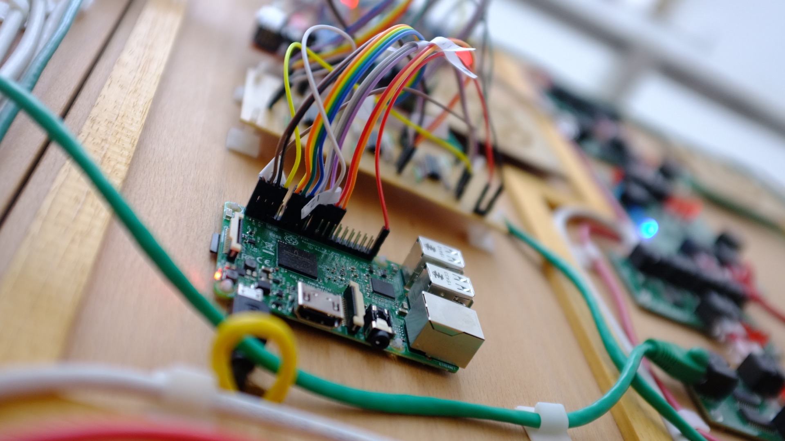

In the Computer Science Department at Bristol University we’ve been working on a really cool project to demystify the seemingly magical mechanisms of computation: the Big Hex Machine.
The machine is a giant 16-bit Computer, designed to show how binary information flows through simple, connected components to execute programs. Built from from over one hundred 4-bit 'hex' modules - and measuring over eight square meters - it’s a colossus. Along with the processor it has its own display, input and output ports (for things like buttons) and a complete toolchain for writing and running programs.
But how on earth do you control such a colossus?
Well, enter the Raspberry Pi...
We love the Pi at Bristol - it’s used for so many projects and has become a vital part of our toolkit as scientists and engineers. When we designed the Big Hex Machine it was an obvious candidate as an interface controller: powerful enough to run complex software, adaptable through GPIO pins, affordable and small! What more did we need? (Apart from built in wifi too!)
As with many great projects, the Big Hex Machine started life as a tangled mess on the floor:
This was our first 8-bit prototype. And in this early stage it was pretty useless. Firstly, there was no practical way to control it - we just had to turn it on at the mains and then turn it off and on again to reboot. We could control the clock speed, but this was limited up to 1KHz and meant even simple programs could take a while to complete! Secondly, if we wanted to run a different program we had to load it into another memory module and then manually swap them over by disconnecting and reconnecting cables. Furthermore, loading the memory module was also a bit of a hassle - we had to do this via a special i2c board (attached to a Raspberry Pi) which used a Python script to write program instructions to the memory locations. It worked as a proof of concept, but was far from an ideal solution.
At this point we decided to throw caution to the wind, and prototype something which really did what we needed it to: an all powerful interface controller.
The controller had to perform two main tasks:
To solve this problem we set up a NodeJS web server on the Raspberry Pi and interfaced the i2c board with the machine using the Pi’s GPIO. The server could then receive basic commands to start and stop, speed up and slow down, and reset. We also adapted the machine so that we could inject instructions directly into it. This mechanism, coupled with an onboard compiler, means we can automatically load any code into the machine without unplugging any cables! The image below shows us testing the Pi with the prototype machine (top center of image). Note the USB extenders and very long HDMI cable to the Pi - we needed to untether!
So the next stage of the project was to set the Pi up as a wireless hotspot. After some minor tweaking we got the hotspot up and running pretty quickly, and much to our delight at that point the Raspberry Pi 3 turned up - so we ditched the USB wifi dongle along with the trailing cables too!
And everything was nearly complete. The final piece of the puzzle was a user interface to control the machine. This came in the form of a simple web application to control the machine via the hotspot + web server. As we had already built a simple RESTful interface on top of the web server, it was really easy to send commands to it via a barebones app using HTML5, JQuery and bootstrap.
The app is responsive too, so it is easy to write programs if you’re using a laptop, or impressive enough to control the machine from mobile devices. Oh, and it’s all open source, so can be viewed from the git repo here.
As an final exercise we removed the i2c board and connected the machine directly to the Pi's GPIO pins via a custom driver board. This board was needed to mitigate the different voltage levels between the GPIO pins and hex modules, and to isolate the circuits to make sure we weren't going to accidently fry the Pi. Connecting the Pi directly to the computer also meant we could run it at higher speeds (the i2c protocol wastes a lot of clock cycles). To turbo boost the clock we also built a clever NodeJS / C++ GPIO wrapper to toggle the pins as quickly as possible (thanks Sam!). It now runs at up to 80kHz - which is fast enough to do lots of cool stuff. Here's the Pi and driver board sitting pride of place on the machine.
The Raspberry Pi is a fundamental part of the Big Hex Machine. It not only controls the signals coming into the machine, but also controls how the machine runs and operates. Its small form factor, built in wifi and GPIO has made it the perfect tool for a really ambitious project. Most importantly, it’s been great to use a device which is designed to empower individuals to get ambitions and hands on with computing - and that’s exactly the philosophy of the Big Hex Machine too!
Post by: Richard Grafton